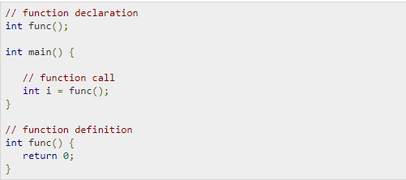

VARIABLES In C Programming
A variable is nothing but a name given to a storage area that our programs can manipulate. Each variable in C has a specific type, which determines the size and layout of the variable's memory; the range of values that can be stored within that memory; and the set of operations that can be applied to the variable.
The name of a variable can be composed of letters, digits, and the underscore character. It must begin with either a letter or an underscore. Upper and lowercase letters are distinct because C is case-sensitive. Based on the basic types explained in the previous chapter, there will be the following basic variable types
C programming language also allows to define various other types of variables, which we will cover in subsequent chapters like Enumeration, Pointer, Array, Structure, Union, etc. For this chapter, let us study only basic variable types.
Variable Definition in C
A variable definition tells the compiler where and how much storage to create for the variable. A variable definition specifies a data type and contains a list of one or more variables of that type as follows
Here, type must be a valid C data type including char, w_char, int, float, double, bool, or any user-defined object; and variable_list may consist of one or more identifier names separated by commas. Some valid declarations are shown here
The line int i, j, k; declares and defines the variables i, j, and k; which instruct the compiler to create variables named i, j and k of type int.
Variables can be initialized (assigned an initial value) in their declaration. The initializer consists of an equal sign followed by a constant expression as follows
>Some examples are -
For definition without an initializer: variables with static storage duration are implicitly initialized with NULL (all bytes have the value 0); the initial value of all other variables are undefined.
Variable Declaration in C
A variable declaration provides assurance to the compiler that there exists a variable with the given type and name so that the compiler can proceed for further compilation without requiring the complete detail about the variable. A variable definition has its meaning at the time of compilation only, the compiler needs actual variable definition at the time of linking the program.
A variable declaration is useful when you are using multiple files and you define your variable in one of the files which will be available at the time of linking of the program. You will use the keyword extern to declare a variable at any place. Though you can declare a variable multiple times in your C program, it can be defined only once in a file, a function, or a block of code.
Example
Try the following example, where variables have been declared at the top, but they have been defined and initialized inside the main function -
When the above code is compiled and executed, it produces the following result -
The same concept applies on function declaration where you provide a function name at the time of its declaration and its actual definition can be given anywhere else. For example -
Lvalues and Rvalues in C
There are two kinds of expressions in C -
lvalue - Expressions that refer to a memory location are called "lvalue" expressions. An lvalue may appear as either the left-hand or right-hand side of an assignment.
rvalue - The term rvalue refers to a data value that is stored at some address in memory. An rvalue is an expression that cannot have a value assigned to it which means an rvalue may appear on the right-hand side but not on the left-hand side of an assignment.
Variables are lvalues and so they may appear on the left-hand side of an assignment. Numeric literals are rvalues and so they may not be assigned and cannot appear on the left-hand side. Take a look at the following valid and invalid statements